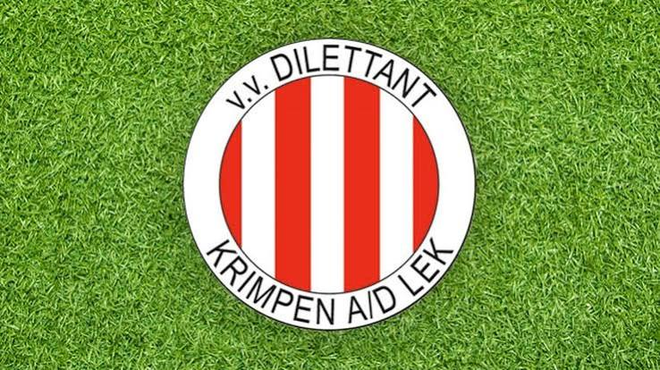
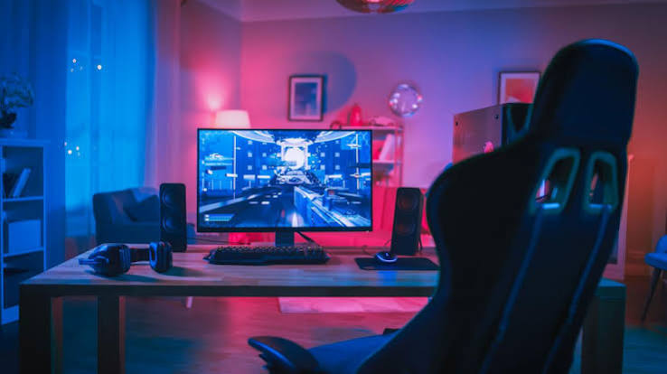

Mijn hobby's

Voetbal
Ik speel al sinds mijn 8e jaar voetbal bij een lokale club. Het is een geweldige manier om fit te blijven en teamwork te leren. Na 2 jaar ging ik naar een andere voetbalclub: DCV in Krimpen aan den IJssel, hier heb ik tot 2 jaar geleden gevoetbald. Toen ontstonden er ruzies met de trainers en de spelers wilden niet meer, dus toen is het team gestopt. Sinds 2 jaar speel ik nu bij Dilettant in Krimpen aan de Lek, dit is een hele leuke club met leuke medespelers en trainers!

Gamen
In mijn vrije tijd speel ik graag videogames. Het helpt me ontspannen na een lange schooldag en het is gewoon heel erg leuk. Ik heb zelf een gaming laptop, een pc en een Playstation 5. Daardoor kan ik heel veel verschillende games spelen. Meestal zit ik een paar uurtjes per dag te gamen, soms wat langer en soms wat korter. Ik speel eigenlijk altijd met mijn vrienden, want dat is altijd heel veel lachen en plezier hebben. Ook al zijn we vaak boos door het spel en niet allemaal even goed.
Muziek
Ik luister graag naar verschillende muziekgenres en vind bijna alle soorten muziek best wel leuk! Muziek is een belangrijk onderdeel van mijn leven. Ik luister ook super veel muziek, als ik fiets, in de auto zit, op school ben en ook als ik aan het gamen ben! Ik doe eigenlijk bijna alles met muziek aan. Meestal heb ik per week altijd meer dan 2000 minuten naar muziek geluisterd. Ik gebruik altijd Spotify om naar muziek te luisteren. Ik heb een Premium-account en kan daardoor ook offline muziek luisteren. Ik luister vaak naar muziek van artiesten zoals Alex Warren, Drake, Kanye West en nog veel meer!